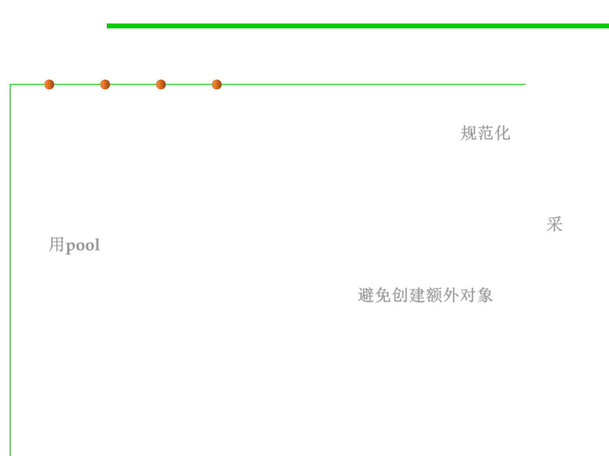

8.3 Code Tuning for Performance Optimization
Various ways of reducing GC
▪ The canonicalization techniques are one way to avoid garbage
collection: fewer objects means less to garbage-collect. 规范化
▪ Similarly, the pooling technique in that section also tends to reduce
garbage-collection requirements, partly because you are creating
fewer objects by reusing them, and partly because you deallocate
memory less often by holding onto the objects you have allocated. 采
用pool
▪ Another technique for reducing garbage-collection impact is to avoid
using objects where they are not needed. 避免创建额外对象